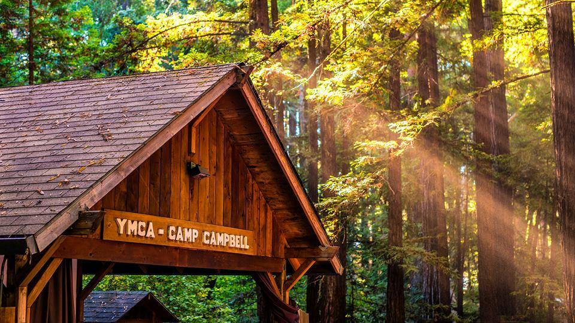

American High School

AP Computer Science Principles
Web Design and Development
Larry Zhi
3441 Atwater Ct.
larryzhi1230@gmail.com
510-284-9103
I am a high school junior who is interested in computer science and web development. I am looking to become more proficient in front-end development, in order to gain some experience needed for college classes, and eventually job opportunities.
Ohlone College
American High School
AP Computer Science Principles
Web Design and Development
Volunteership
Camp Campbell (October 2019)

Helped supervise 6th graders for a week at science camp in the Santa Cruz mountains
Gained leadership experience, as well as experience dealing with children. Taught me a lot about organization and scheduling, and refined my attention to detail.
FCSN - Friends of Children with Special Needs (August 2018-present)
Provide companionship with children with special needs, and engage them with various activities.
Gained leadership experience, as well as experience dealing with children. Also taught me a lot about patience.
Java (Proficient)
Python (Intermediate)
Html + Css (currently working on)
JavaScript (currently working on)
Language Skills
English (Proficient)
Chinese - Mandarin (Proficient)